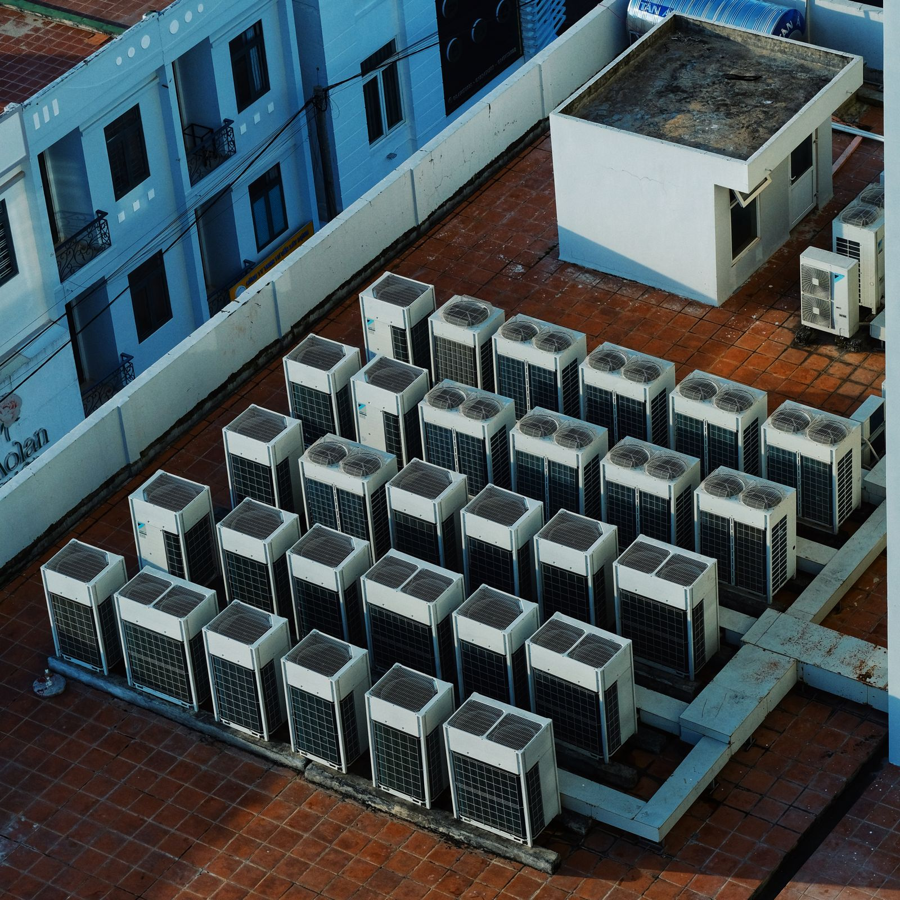
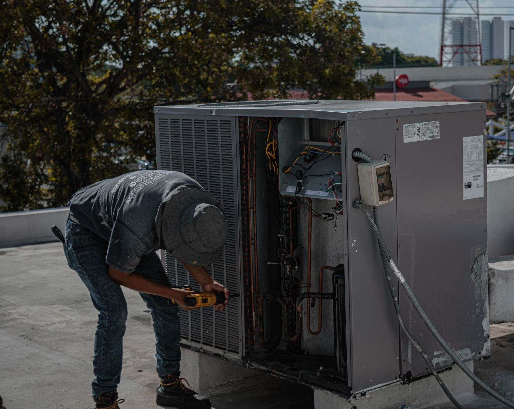

New units sold and installed, old units replaced or bought back, and everything needed to keep them running: eight services, all by our own technicians.
New units from the brands we trust, sold at fair prices and installed so they last. Supply only, or supplied and installed. We size the system to the space and the Kuwait heat load, not to the catalogue.

An air conditioner past eight to ten years uses far more electricity than a new inverter unit and breaks down when you need it most. We assess it honestly and, when replacement makes sense, do the whole job in one visit.

Working or faulty, we buy used air conditioners from homes, offices and buildings across Kuwait. Sell for cash, or put the value towards a new unit.

For villas, offices, showrooms and multi-floor buildings where many rooms need independent control from one efficient system.

Good ducting is the difference between a cold room and a cold corner. We fabricate, insulate and clean duct systems for new builds and renovations.
A planned service visit costs far less than a breakdown in August. Our contracts keep units clean, efficient and covered.

When the cooling stops, we come, diagnose and fix it with genuine parts. After-hours call-out is available all summer.

Genuine and OEM-grade parts in stock, for our own technicians and for other contractors and maintenance teams.

Straight answers on AC sizing, central versus split systems, servicing and repairs in Kuwait.
As a rule of thumb, Kuwait's heat needs roughly 1 ton of cooling for every 12 to 15 square metres, more for top floors, west-facing rooms and large windows. We confirm the size with a site survey before quoting, so you are not paying for an oversized unit or living with an undersized one.
A split AC cools one room with its own indoor and outdoor unit. Central air conditioning uses one ducted or package unit to cool several rooms through ducts, and a VRF system runs many indoor units from one outdoor unit with independent control per room. We install and maintain all three.
With Kuwait's dust and the long cooling season, filters should be cleaned monthly and the unit professionally serviced every three to four months, with a full check before summer. An annual AC maintenance contract schedules this for you.
Yes. We buy used split, window, cassette, ducted, package and VRF units of any brand and any age, working or not. Send a photo of the unit and its nameplate for a same-day price. We pay cash or give trade-in credit against a new unit, and we uninstall and collect for free.
If the unit is under eight years old and the fault is a capacitor, fan motor or gas leak, repair is usually worth it. If it is older, needs a compressor, or uses R22 refrigerant, a new inverter unit will typically pay for itself in two to three summers through lower electricity bills, and we deduct your old unit's value from the price.
Yes. Our technicians repair split, window, cassette, ducted, package and VRF units from Gree, Midea, LG, Samsung, York, Carrier and most other brands, and we keep compressors, motors, control boards and refrigerant in stock.
Yes. We run a 24/7 emergency call-out through the summer, with priority response for maintenance contract clients.
Send us a photo of the unit or the room dimensions and we will recommend the right move and price it, including what your old unit is worth.